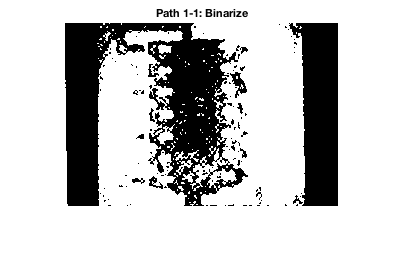

Machine Vision Homework 3
- Problem 4
- Author: Xinyi Cai
Contents
Housekeeping
clc;
clear all;
Load the image
img = imread('chip.jpg');
figure; imshow(img)
title('Original Image')
Define Structual Elements
SE_lead = strel('rectangle', [5 11]);
SE_chip = strel('rectangle', [147 82]);
SE_1 = strel('rectangle', [8 16]);
SE_2 = strel('rectangle', [3 3]);
SE_3 = strel('rectangle', [30 74]);
Image Process Path 1
img_BW_1 = im2bw(img, 0.34);
figure; imshow(img_BW_1); title('Path 1-1: Binarize')
img_BW_1 = imcomplement(img_BW_1);
figure; imshow(img_BW_1); title('Path 1-2: Invert')
img_morph_1 = imdilate(img_BW_1, SE_1);
figure; imshow(img_morph_1); title('Path 1-3: Dilate')
img_morph_1 = imcomplement(img_morph_1);
figure; imshow(img_morph_1); title('Path 1-4: Invert')
img_morph_1 = imerode(img_morph_1, SE_2);
figure; imshow(img_morph_1); title('Path 1-5: Erode')
img_morph_1 = imcomplement(img_morph_1);
figure; imshow(img_morph_1); title('Path 1-6: Invert')
img_morph_1 = imerode(img_morph_1, SE_3);
figure; imshow(img_morph_1); title('Path 1-7: Erode')
img_morph_1 = bwmorph(img_morph_1, 'shrink', inf);
figure; imshow(img_morph_1); title('Path 1-8: Shrink')
[R C] = size(img_BW_1);
img_BG = zeros(R, C);
img_BG(round(R/2), round(C/2)) = 1;
img_SE = imdilate(img_BG, SE_3);
figure; imshow(img_SE); title('SE Mask')
img_morph_1 = and(img_morph_1, img_SE);
figure; imshow(img_morph_1); title('Path 1-9: AND')
img_morph_1 = imdilate(img_morph_1, SE_chip);
figure; imshow(img_morph_1); title('Path 1-10: Dilate')

Image Process Path 2
img_BW_2 = im2bw(img, 0.65);
figure; imshow(img_BW_2); title('Path 2-1: Binarize')
img_morph_2 = bwmorph(img_BW_2, 'open');
figure; imshow(img_morph_2); title('Path 2-2: Open')
img_morph_2 = imdilate(img_morph_2, SE_lead);
figure; imshow(img_morph_2); title('Path 2-3: Dilate')
img_morph_2 = imcomplement(img_morph_2);
figure; imshow(img_morph_2); title('Path 2-4: Invert')
img_morph_2 = imdilate(img_morph_2, SE_lead);
figure; imshow(img_morph_2); title('Path 2-5: Dilate')
img_morph_2 = imcomplement(img_morph_2);
figure; imshow(img_morph_2); title('Path 2-6: Invert')
img_morph_2 = bwmorph(img_morph_2, 'shrink', inf);
figure; imshow(img_morph_2); title('Path 2-7: Shrink')
Image Process Combining Path 1 and 2
img_morph = and(img_morph_1, img_morph_2);
figure; imshow(img_morph); title('Combining Path 1 and 2: AND')
img_morph = imdilate(img_morph, SE_lead);
figure; imshow(img_morph); title({'Dilate', 'Final Target'})